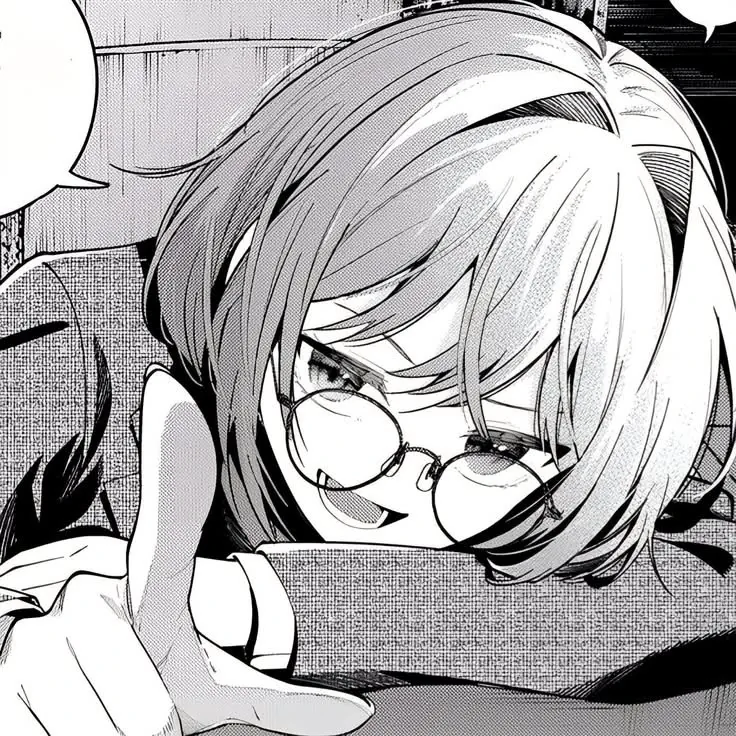

Veronica is someone who finds comfort in the little things. She enjoys listening to music, reading, and spending quiet moments by herself, simply watching the world go by.
She may seem calm and distant at first, but behind that quiet side is someone with a curious mind and a gentle heart. She enjoys discovering new things, even if she prefers to observe them from afar.
For Veronica, not every day needs to be extraordinary. Sometimes, a quiet evening, her favorite music, and a little time alone are more than enough.